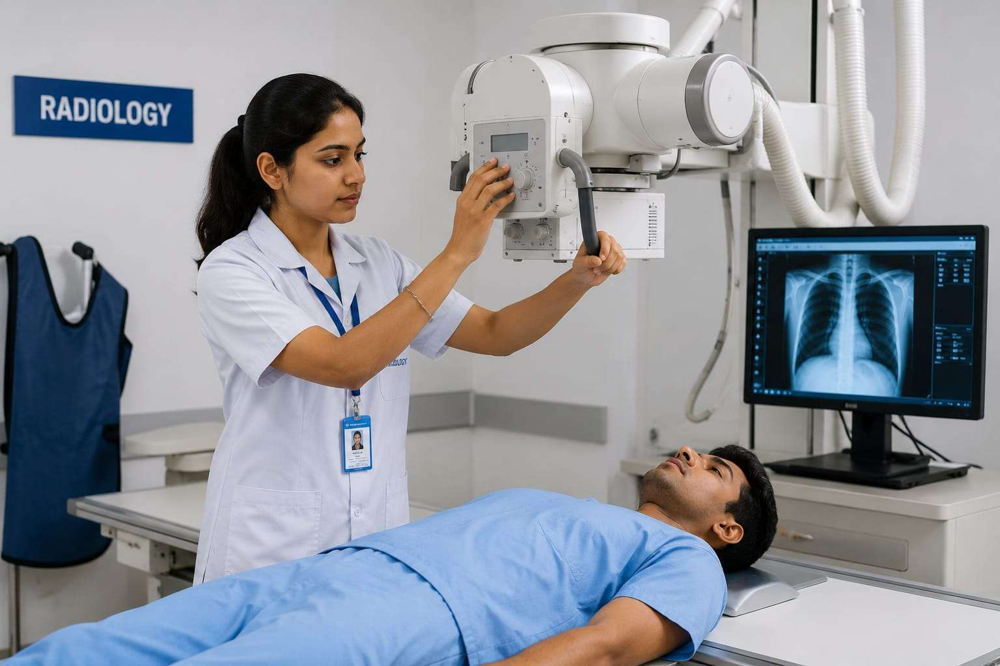
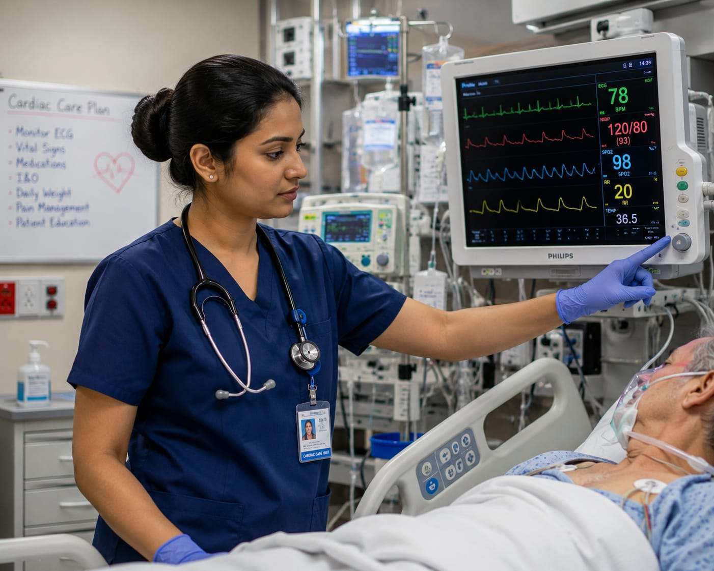
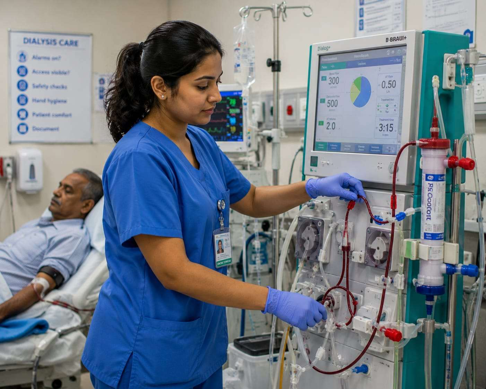
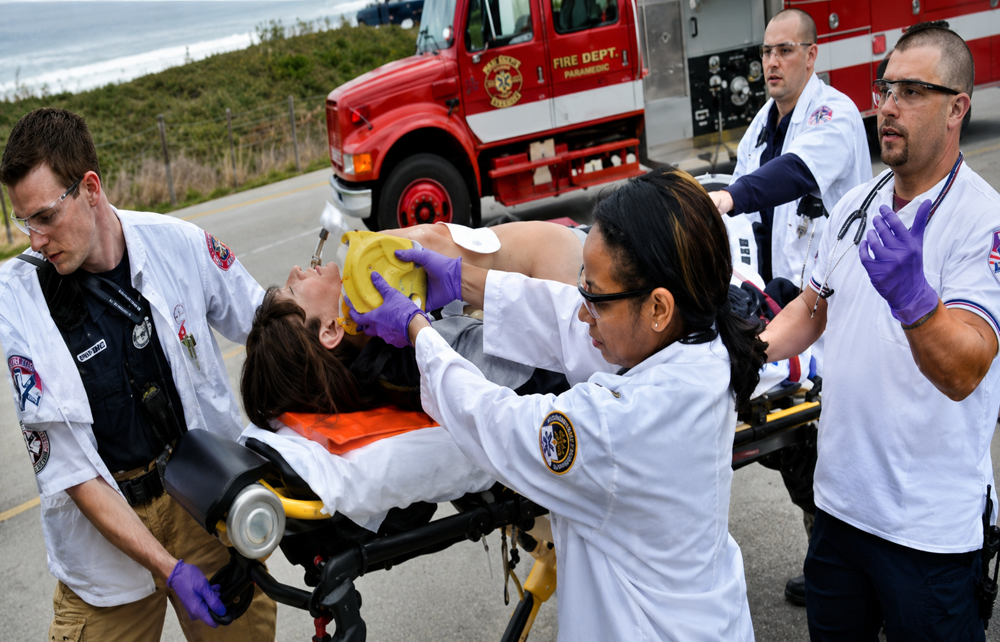
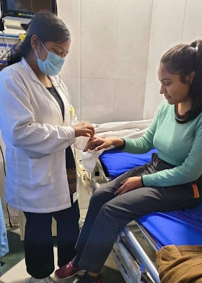
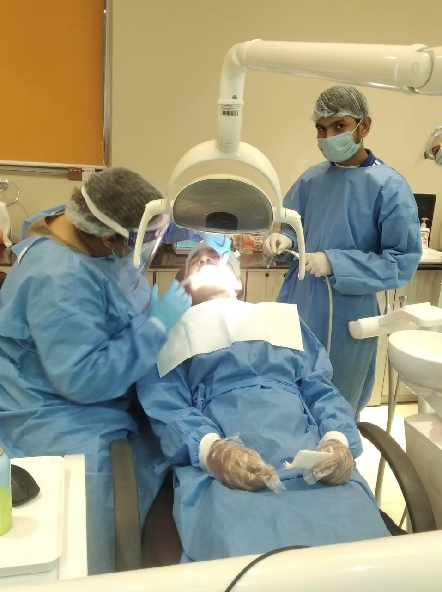
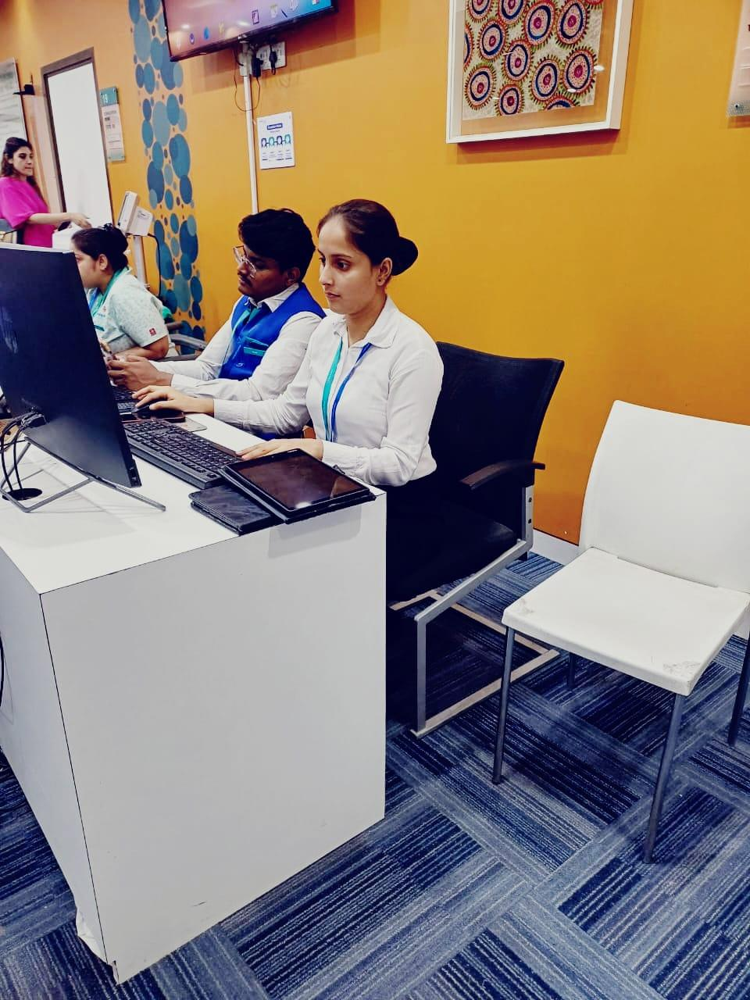

A comprehensive foundational program designed to train professionals in patient care protocols, clinical support tasks, nursing ethics, and diagnostic terminology. Students gain a strong theoretical base along with mandatory internship rotations at leading Hospitals, Nursing Homes, Multispecialty Clinics, Dental Clinics, Wellness Clinics, etc.

Operation Theatre Technology is a career-focused program designed to train students in the vital skills required to support surgical teams and ensure smooth, safe, and sterile operating room procedures. This program equips learners with in-depth knowledge of surgical instruments, OT protocols, infection control, patient preparation, and post-operative care. Students are trained to assist surgeons, anaesthetists and nurses by managing equipment, maintaining aseptic conditions and handling critical situations with precision and calm.

A technical program focused on operating state-of-the-art diagnostic machinery like X-Rays, CT scans, and MRI scanners. Candidates learn proper clinical safety guidelines and positioning protocols for diagnostics.

An allied healthcare training curriculum preparing specialists to monitor heart health, set up and monitor ECG machines, evaluate vitals, track patient intake/output, and manage cardiac care workflows.
It is a most popular career-oriented program that equips students with the essential skills and scientific knowledge to work as key contributors in the medical diagnostic process. Students learn pathology procedures, hematology, microbiology sample cultures, biochemistry, and accurate reporting.

A specialized clinical pathway focusing on renal care. Students learn hemodialysis machine operations, dialysis safety checks, vascular access monitoring, hygiene, and patient care tracking.
This program offers a strong foundation in physiotherapy techniques, human anatomy, exercise therapy, and injury prevention strategies. It blends academic knowledge with hands-on clinical training to assess physical conditions, assist in recovery from injuries, support athletes in performance enhancement, and promote long-term musculoskeletal health.
A healthcare business administration course. Focuses on hospital reception desk operations, patient records management, OPD/IPD schedules, clinical billing, and healthcare quality assurance.

Emergency Medical Technicians (EMTs) are trained to provide basic Emergency Medical Care to patients who are critical and in Medical emergency. They are skilled in all levels of Basic Life Support procedures and are part of the EMS system. They perform initial medical assistance with the basic equipment typically found on BLS & ACLS ambulances and in Emergency and Trauma Care departments in a Hospital.

Nursing Assistants lend support to the Nurses and Doctors in various treatment procedures in Hospitals / Nursing Homes / Maternity & Child Care / Multispecialty Clinics / Medical facilities. They undertake skills related to Nursing procedures, Patient Assessment and Documentation, Specimen collection, Administration of injections, Patient Care, and Medical facility processes.

Dental Assistants are health professionals who work with Dentists helping them in 4 hand Dentistry. Their job is to work with patients as well as assist the Dentist during dental treatment procedures. Dental Assistants greatly increase the efficiency of dentist in delivery of quality health care and are valuable members of any dental care team.

Hospital Executives are the first point of contact in a hospital for patients & visitors. Involved in the administrative duties, they are responsible for patients' registration, counselling, admission, Medical Insurance and discharge processes. They are knowledgeable on Hospital Information Systems and administrative procedures and are versed with various Healthcare Software Applications.
A specialized skilling curriculum delivering immediate structural employment. Covers elevator and escalator motor assembly, electrical control wiring panels, digital boards, safety inspections, and building structure alignment rules.
.jpeg)
A vital responder program training candidates to handle life-saving emergency medical situations. Strongly recommended and mandatory for offices, public environments, and corporate staff safety protocols.